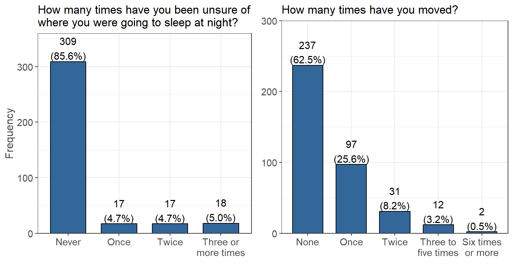
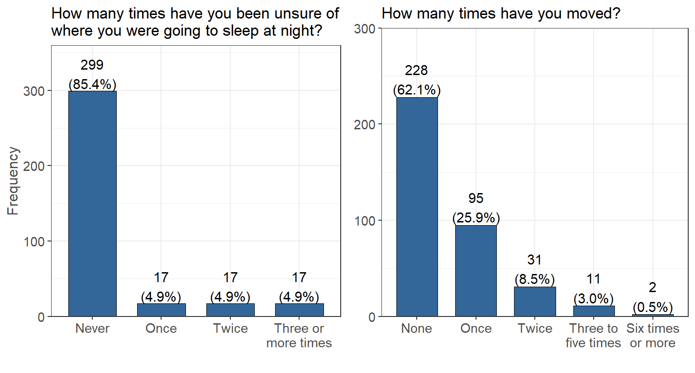

Housing
COVID Housing Impact
Has your housing situation changed due to COVID-19?  There are 249 people that participated in the survey that claim their housing has not changed due to the impacts of COVID. There also are 123 people that say their housing situation did change due to the impacts of COVID.
There are 249 people that participated in the survey that claim their housing has not changed due to the impacts of COVID. There also are 123 people that say their housing situation did change due to the impacts of COVID.
Living Near College
Are you currently living in the city/area in which you are enrolled in college? There are 165 people that participated in the survey that do not currently live in the city/area of their enrolled college. There also are 222 people that say they do live in the city/area of their enrolled college. This high “No” value could likely be due to many campuses being remote and students choosing to live at home or in an area with lower cost of living.
Current Housing Situation
Which best describes your current housing situation?| Current Housing Situation | Percentage |
|---|---|
| I live with parents or other relatives, not paying rent with my own money | 126/377 (33.4%) |
| I rent an apartment or house with roommates | 87/377 (23.1%) |
| I live with parents or other relatives, paying rent with my own money | 80/377 (21.2%) |
| I rent an apartment or house without roommates | 43/377 (11.4%) |
| I own my own home | 12/377 (3.2%) |
| I am temporarily living with friends or relatives, without permanent housing (couch surfing) | 9/377 (2.4%) |
| I live in university housing or residence halls | 9/377 (2.4%) |
| Other | 6/377 (1.6%) |
| I live in transitional housing or a halfway home | 2/377 (0.5%) |
| I am currently living at an outdoor location, abandoned building, car, or other area not meant for regular housing, without permanent housing | 2/377 (0.5%) |
| I live in a sorority or fraternity house | 1/377 (0.3%) |
In the past 12 months…
The following were asked as a series of Yes/No questions to help better understand the living situations of participating students.| Percent | |
|---|---|
| Was there a rent or mortgage increase that made it difficult to pay? | 115/347 (33.1%) |
| Have you been unable to pay or underpaid your rent or mortgage? | 89/339 (26.3%) |
| Have you ever been late paying rent or mortgage? | 93/359 (25.9%) |
| Have you been unable to pay or underpaid a utility bill? | 119/357 (33.3%) |
| Have you lived with others beyond the expected capacity of your house or apartment? | 74/358 (20.7%) |
| Have you been asked to leave your home by someone you lived with? | 22/374 (5.9%) |
| Have you been evicted? | 3/379 (0.8%) |
| Have you had to stay in a hostile housing environment or abusive relationship because you had no other place to live? | 32/360 (8.9%) |
The following were asked as frequency questions to help better understand the living situations of participating students.
 Over the past 12 months, the majority of people were never unsure of where they would be sleeping (309 people ) or have not moved housing (237 people). For uncertainty in where they would be sleeping, the remaining responses were mostly evenly distributed over the other options. For number of times that a person has moved, 97 people have claimed they moved once in the last 12 months and 31 people have moved twice. Only a small minority have moved 3 or more times in the last 12 months.
Sleeping Places
In the last 30 days, or in the past 12 months, have you slept in any of the following places?| Last 30 days | Last 12 months | |
|---|---|---|
| Campus or University Housing | 7/28 (25.0%) | 21/28 (75.0%) |
| Sorority/Fraternity house | 0/3 (0.0%) | 3/3 (100.0%) |
| In a rented or owned house, mobile home, or apartment (alone or with roommates or friends) | 58/174 (33.3%) | 116/174 (66.7%) |
| In a rented or owned house, mobile home, or apartment with my family (parent, guardian, relative or caretaker) | 80/215 (37.2%) | 135/215 (62.8%) |
| At a shelter | 1/3 (33.3%) | 2/3 (66.7%) |
| Temporarily staying with a relative, friend or couch surfing until I find other housing | 8/31 (25.8%) | 23/31 (74.2%) |
| Temporarily at a hotel or motel without a permanent home to return to (not on vacation or business travel) | 2/8 (25.0%) | 6/8 (75.0%) |
| In a transitional housing or independent living program | 1/4 (25.0%) | 3/4 (75.0%) |
| At a group home such as halfway house or residential program for mental health or substance abuse | 0/1 (0.0%) | 1/1 (100.0%) |
| Outdoor location such as street, sidewalk, alley, park, etc. | 1/4 (25.0%) | 3/4 (75.0%) |
| In a car, truck, van, RV or camper | 6/15 (40.0%) | 9/15 (60.0%) |
| In a closed area/space with a roof not meant for human habitation such as an abandoned building, garage, tent, etc. | 0/4 (0.0%) | 4/4 (100.0%) |
Unstable Housing
In the past 12 months, if you have experienced unstable housing, what was the most common reason?  It seems that of the people who experienced unstable housing, the most common cause was not having enough money to cover housing expenses (56 people). The next most common was cause was from issues with roommates, both having conflicts (18 people) and them being unable/unwilling to pay living expenses (17 people).
Funding
Partially funded by USDA SNAP, known in California as CalFresh, an equal opportunity provider and employer, and the California Department of Social Services. Any use of these results in further work must use the following citation:Center for Healthy Communities, "Basic Needs Survey", June 2020. Retrieved on xx-xxx-xxxx from https://chicocalfresh.github.io/bns-website/index.html